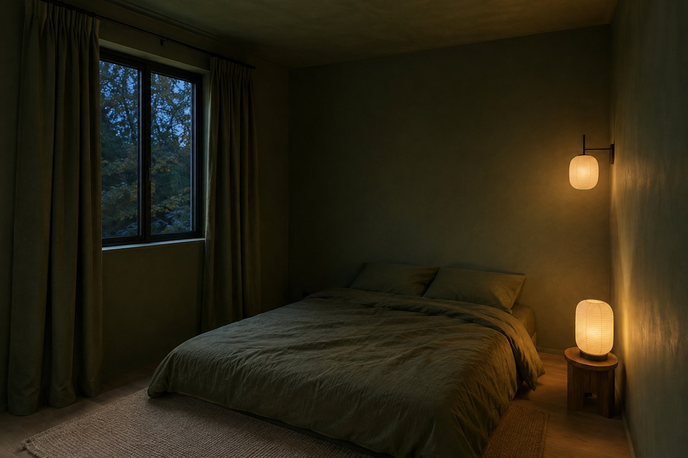
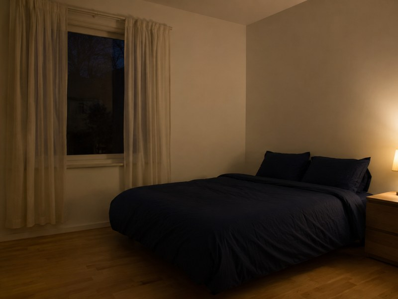
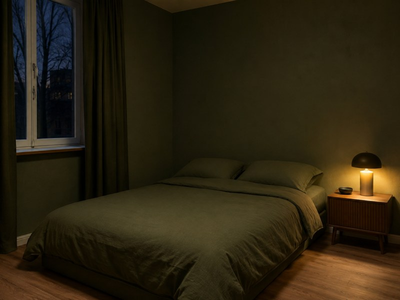

Small Bedrooms Look Bigger In One Colour, Not In White
A small bedroom often feels cramped because strong horizontal and vertical lines tell your eye exactly where the space ends. Matching the main colour of the walls and bedding softens those boundaries, so the room reads as one continuous shape rather than a box divided by the bed.
The short version
- Use one colour across the walls and bedding rather than relying on white to make a small room feel larger.
- Avoid dark bedding against pale walls when space is tight; the contrast creates a strong line across the room.
- Deep colours need warm light, because a cool ceiling bulb can make the same shade look grey rather than enveloping.
- Renters can change bedding, curtains and lighting without touching the paintwork.
As an Amazon Associate I earn from qualifying purchases. Links below are affiliate links (#ad) - they cost you nothing extra. Nothing here is a paid placement, and no brand sees this page before it goes up.
One colour makes the room read as one shape
Start with the largest visual interruption: the bed. When bedding contrasts sharply with pale walls, its top edge becomes an obvious boundary across the room. Matching the bedding to the wall colour reduces that break, which is why the effect can work with a deep green just as it can with a pale neutral.
Do not assume white is automatically more spacious. If the walls are white but the bed is a noticeably different colour, the contrast can make the room feel divided at exactly the point where the eye is already focused. The existing room photographs make the difference clear: the furniture has not moved and the room has not grown, but removing that colour break changes how the space is read.


Deep colour works when the light supports it
A deep colour is not a shortcut to spaciousness if the lighting fights it. Check the room at both 16:00 and after sunset before deciding: if the walls look noticeably grey under the ceiling light, the colour is not giving you the calm, continuous effect you want. Warm light generally preserves more of the richness that makes a deep shade feel enveloping rather than flat.
Keep the visual field quiet rather than adding more contrast to compensate. A dark duvet against pale walls, bright curtains against dark walls, and a cold white ceiling bulb create several separate blocks; matching two large surfaces is more useful than adding another decorative feature to a small room.
Three checks prevent a one-colour scheme from going wrong
Check the bedding against the wall in daylight. Hold the fabric beside the wall rather than judging it from a screen, and look at it from about 2m away. If the two colours are obviously different, the bed will still read as a separate block.
Check the light after sunset. Sit on the bed for 10 minutes with the main ceiling light on, then switch to the lamp you normally use. If the deep colour turns grey under the ceiling bulb, change the lighting before rejecting the colour scheme.
Check every large contrast before adding it. In a room where the bed is about 2m long, a strongly contrasting duvet can create a substantial horizontal band across the space. Choose curtains and bedding that support the wall colour instead of introducing another dominant block.
What we would actually buy

Deep green bedding set
This is useful when the walls already have a deep green tone and the contrasting bedspread is making the room look divided. Before buying, check the bedding beside the wall in daylight rather than relying on a screen image. It is not for someone who wants the bed to stand out as a separate focal point.
Best for: A rich, cosy single-colour look
Shop on Amazon →paid link
Olive blackout curtains
These can reinforce a one-colour scheme when the room's existing palette is close to olive, reducing another large area of contrast around the window. Check the curtain colour against the actual wall and bedding before buying, because a near-match that looks noticeably different can create another visual boundary. They are not for a room where olive would introduce a new dominant colour.
Best for: Darkening a room with an olive-toned scheme
Shop on Amazon →paid link Our illustration of the look, not the actual product or place
Our illustration of the look, not the actual product or placeBamboo sheet set
A sheet set can bring the one-colour approach closer to the sleeper without requiring any change to the walls, which is useful when repainting is not an option. Check that its colour works with the wall and outer bedding rather than choosing it as an unrelated accent. It is not for anyone trying to create deliberate high contrast around the bed.
Best for: Light, breathable bedding with natural texture
Shop retailer →paid linkIf you only do one thing
First, stand 2m from the bed in daylight and identify the strongest colour break between the walls and bedding. Then change that break before buying anything else, using warm evening light to check that the chosen colour still looks right after sunset.
How we choose
We look for pieces that change how a small room works, not the cheapest option and not the most photographed one. Everything here has to survive a rental: no drilling, no permanent fittings, nothing that needs a second person to install.
Room images on this site are our own illustrations, not photographs of the products. We link to the retailer so you can see the real item.
Written and selected by Rooms and Roads · Updated August 2026 · links checked August 2026